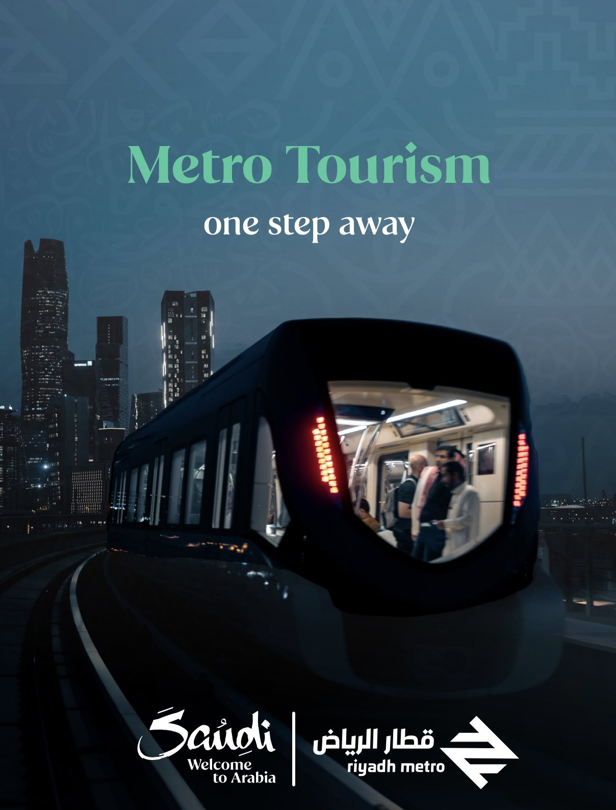
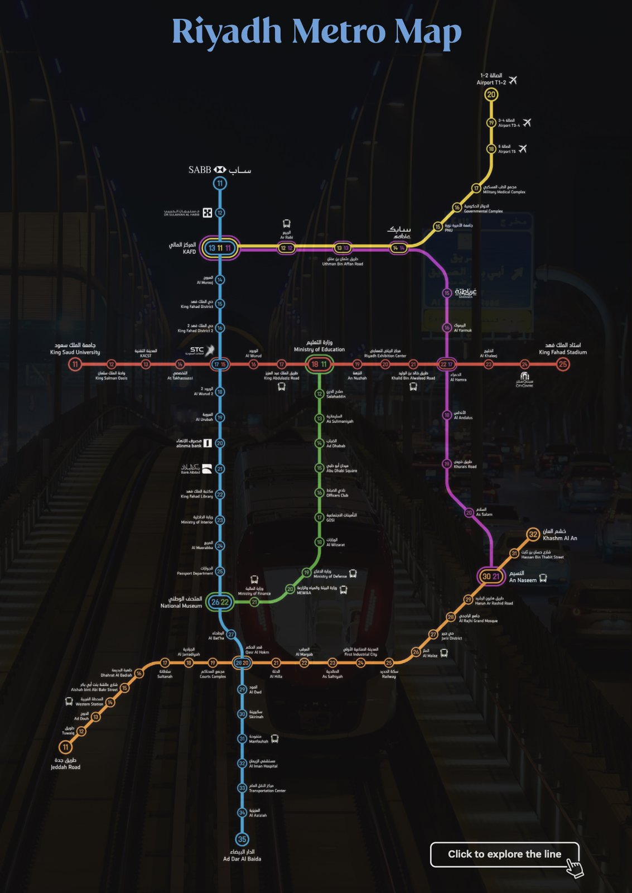
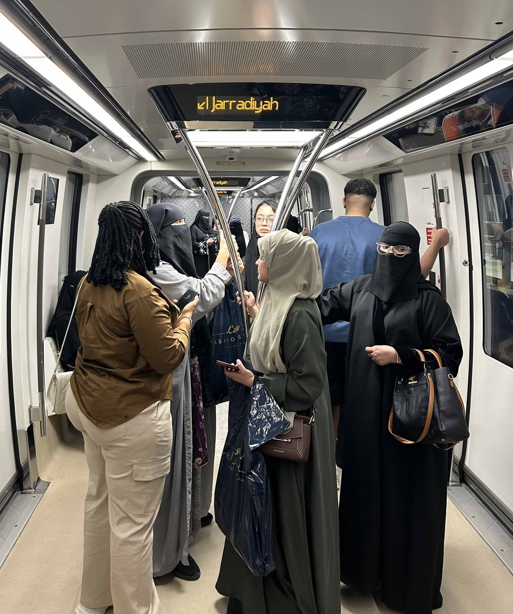
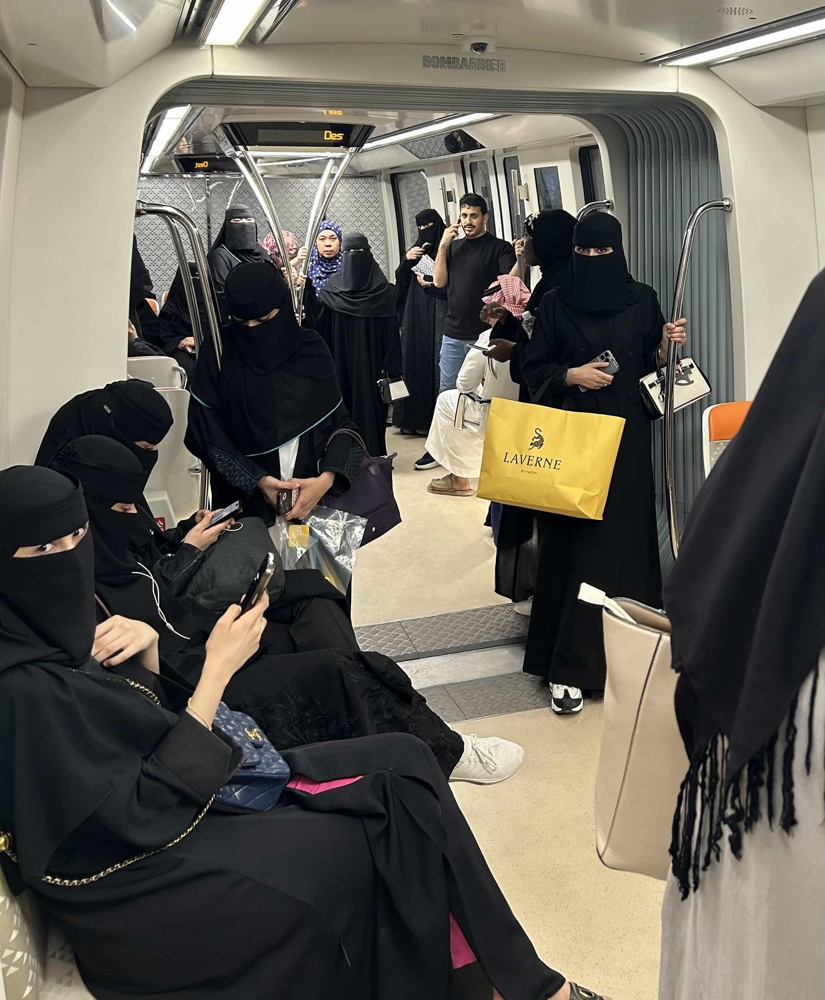
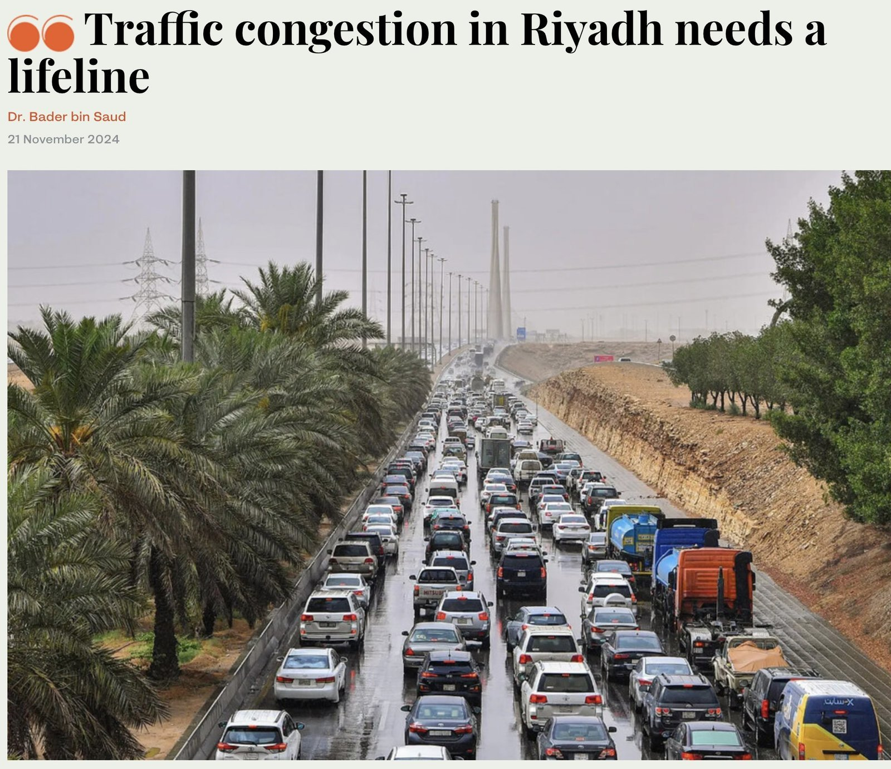
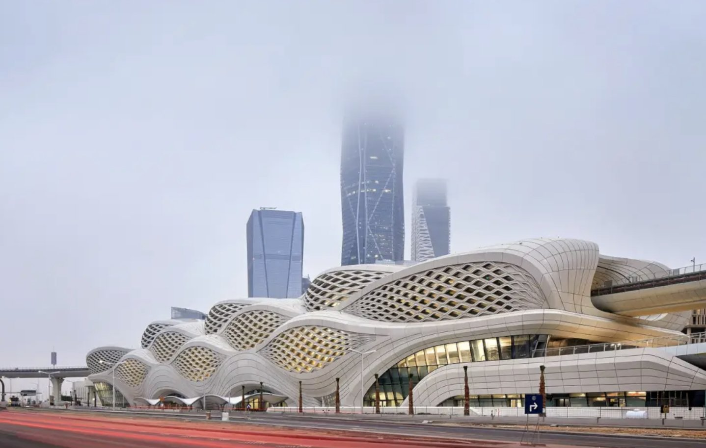
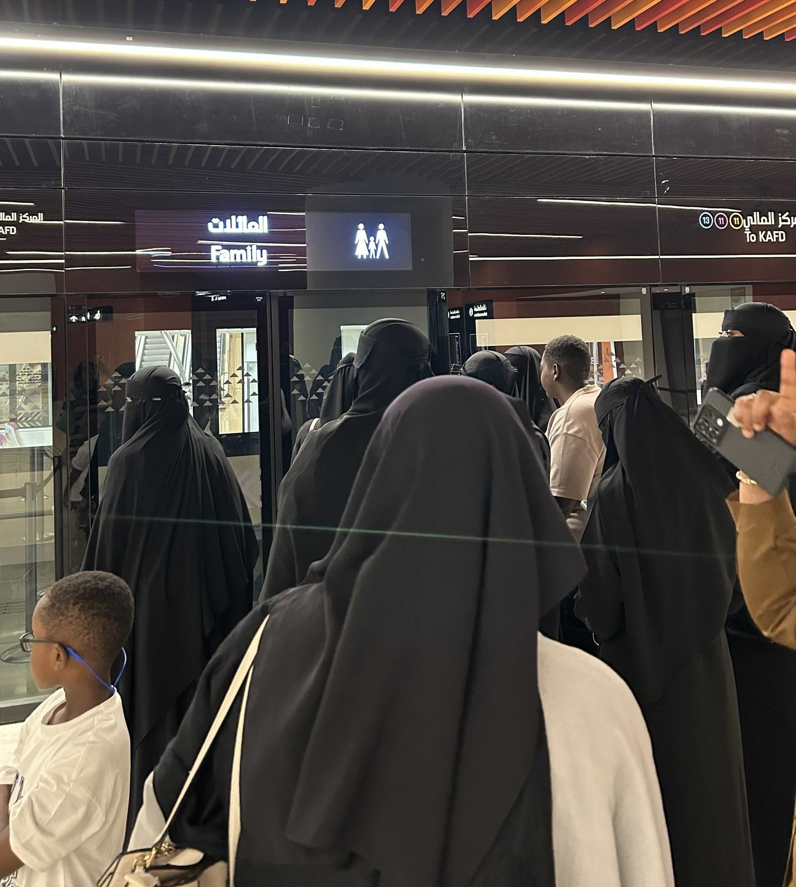
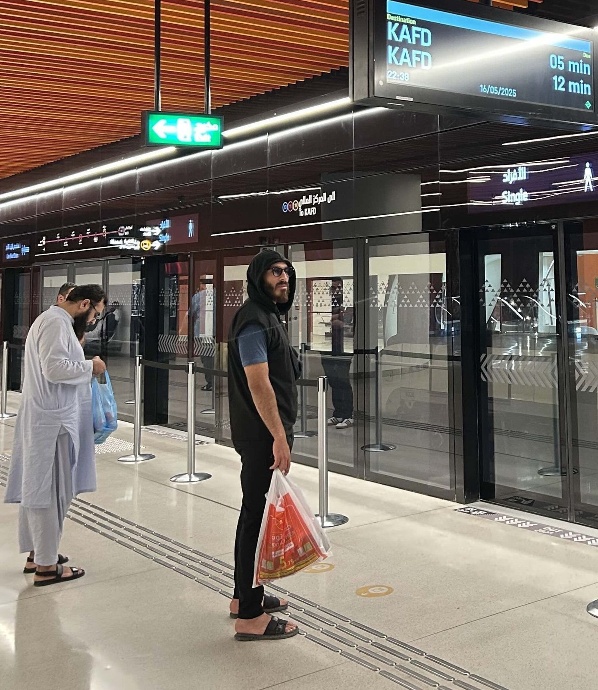

문화·역사적 전환: 자동차 도시에서 공공성의 도시로
리야드는 오랫동안 자동차에 절대적으로 의존해 온 도시였다. 이동은 프라이버시와 개별성을 전제로 한 차량 중심 문화 속에서 이루어졌고, 도시 구조 또한 광폭 도로·대형 교차로·고속도로 네트워크를 중심으로 설계되어 시민들이 동일한 공간을 공유하며 이동하는 경험은 사실상 존재하지 않았다. 이 같은 환경에서 리야드 메트로의 개통은 단순히 새로운 교통수단을 도입한 사건이 아니라, 도시에서 처음으로 '공공 이동'이 일상적 경험으로 자리 잡는 구조적 전환의 순간이다. 2025년 1월 전체 노선이 가동된 리야드 메트로는 도시가 두바이·아부다비·도하 등 중동 주요 도시와 경쟁하는 '글로벌 메트로폴리스'의 반열에 본격적으로 올라섰음을 보여준 상징적 사건이다. 이번 사업은 아리야드 개발청(ADA)이 추진한 압둘아지즈 국왕 프로젝트(King Abdulaziz Project for Riyadh Public Transport)의 핵심으로, 2012년 설계가 시작되어 2014년 4월 3일 공식 착공에 들어갔다.


▲ 리야드 메트로 홍보 사진 및 노선표 — 출처: 사우디 관광청
전환기의 정책: 우버 지원과 버스 통합 네트워크
사우디 정부는 메트로 개통 초기 시민들의 적응을 돕기 위해 우버(Uber) 비용을 지원하는 이례적 정책을 시행했다. 지하철역과 목적지가 3km 이내일 경우 평일 하루 두 차례 우버 비용을 무료로 제공해, 대중교통 경험이 거의 없던 시민들이 새로운 이동 방식을 적극적으로 이용할 수 있도록 했다. 통신원 또한 집에서 가장 가까운 역까지의 거리가 3km 이상이라 혜택을 전부 누리지는 못하지만, 날씨가 좋은 날엔 도보로 지하철을 이용하거나 3km 이내 목적지를 설정해 우버 지원을 활용하는 등 변화된 이동 환경을 직접 체감하고 있다. 또한 이번 개통은 지하철 단독 변화가 아니라, 2023년 3월 개통된 리야드 버스 네트워크와의 통합 운영을 전제로 구축되었다. 2,800여 개 정류장과 80여 개 노선으로 구성된 버스 시스템은 메트로 역과 주거지·상업지·기존 도심을 촘촘히 연결하며 '첫·마지막 마일(First/Last Mile)' 이동 문제를 해결하는 구조로 설계됐다. 특히 리야드 버스 정류장에는 에어컨이 작동하는 밀폐형 셸터가 마련되어 있어 고온의 기후에서도 시민들이 쾌적하게 대기할 수 있다.


▲ 이용객들로 가득 찬 열차 내부 — 출처: 통신원 촬영
경제적 전환: 극심한 교통체증을 넘어 도시 경쟁력으로
리야드는 오랫동안 극심한 교통체증에 시달려 왔다. 전체 이동의 약 90%가 차량에 의존하는 구조 속에서, 20~30분 거리도 출퇴근 시간에는 두세 시간이 걸리는 일이 흔했다. 리야드 메트로는 이러한 병목 현상을 완화하며, 출퇴근 이동 시간이 단축되면서 근로자의 생산성과 생활 효율이 자연스럽게 높아져 기업의 인력 운영도 안정되고 있다. 이 변화는 사우디의 국가 전략 '비전 2030'과 긴밀하게 맞물린다. 사업에는 미국의 벡텔(Bechtel), 독일 지멘스(Siemens), 스페인 FCC, 프랑스 이지스·시스트라(Egis·Systra) 등 세계 유수 기업들이 참여해 사우디가 국제 기준의 초대형 도시 프로젝트를 운영·조정할 역량을 확보하고 있음을 보여준다. 올해 11월에 리야드 메트로는 혁신적 엔지니어링과 복합 네트워크 조정 능력이 인정돼 《미드(MEED)》가 '2025 중동·북아프리카 올해의 메가 프로젝트'로 선정하며 국제적 평가에서도 높은 성과를 거두었다.

▲ 교통 체증이 극심한 리야드 도로 전경 — 출처: 아랍 뉴스(Arab News)
디자인·사회적 전환: 도시의 얼굴과 이동권의 확장
리야드 메트로는 총 6개 노선, 85개 역, 약 176km 규모의 세계 최대급 무인 운전 시스템으로 구축되었다. 특히 세계적 건축가 자하 하디드(Zaha Hadid)가 설계한 카프드(KAFD) 역은 사막 바람과 지층에서 영감을 받은 외피, 유기적 흐름의 내부 공간, 고성능 콘크리트 패널의 조형미로 국제적 주목을 받았다.

▲ 자하 하디드가 설계한 KAFD 역 전경 — 출처: 아크데일리(Archdaily)
사회적 변화 또한 크다. 메트로 도입으로 여성·청년층·외국인의 이동권이 확대되었고, 운전을 강제하지 않는 이동 선택지가 생기면서 일상의 활동 반경이 넓어졌다. 차량 내부는 싱글(Single) 칸, 패밀리(Family) 칸, 퍼스트 클래스(First Class) 칸으로 구분된다. 패밀리 칸은 여성과 가족 단위 이용객을 위한 공간으로 운영되며, 싱글 칸은 남성 단독 구역으로 제공되는 등 성별·가족 구조가 공공교통 설계에 반영되어 있다. 2시간 이용권이 4리얄(약 1,500원)에 불과해 여행자와 장기 체류 외국인 모두 부담 없이 이용할 수 있다. 올해 8월 기준, 메트로는 개통 9개월 만에 이용객 1억 명을 돌파하고 99.7%의 정시 운행률을 기록해 대중교통 전환의 효과를 수치로 입증했다.


▲ 패밀리 칸·싱글 칸 승강장에서 열차를 기다리는 이용객들 — 출처: 통신원 촬영
리야드 메트로는 단순한 교통수단의 도입이 아니라, 도시의 시간 구조와 시민의 생활 방식, 그리고 사우디의 미래 전략을 동시에 재편하는 역사적 사건이다.
사진 출처 및 참고자료
통신원 촬영
사우디 관광청, visitsaudi.com
《Archdaily》 (2025. 01. 08). Riyadh Metro Orange Line Now Is Operational, archdaily.com
《ARAB NEWS》 (2024. 11. 21). Traffic congestion in Riyadh needs a lifeline, arab.news/wdfez
《ARAB NEWS》 (2024. 11. 30). Riyadh launches Middle East's largest urban rail network, arab.news/bqbrn
《ARAB NEWS》 (2025. 04. 03). Riyadh Metro on its way to reshaping the city, arab.news/9u2hb
《ARAB NEWS》 (2025. 08. 26). Riyadh Metro surpasses 100m passengers in under 9 months, arab.news/n52r6
《Railway-News》 (2025. 11. 24). Riyadh Metro Receives "Mega Project of the Year" Award from MEED, railway-news.com